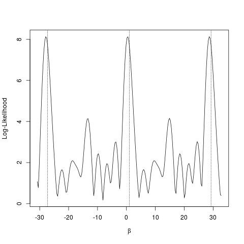
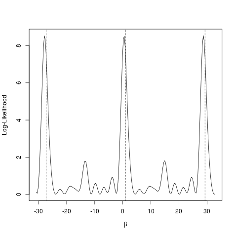
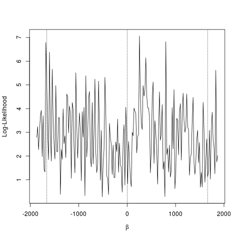
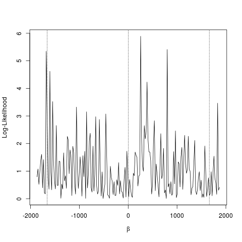

Analysis of Directional Data
1 Introduction
Examples
Wish to analyze data in which response is a “direction”:
- 2d directional data are called circular data
- 3d directional data are called spherical data
- not all “directional” data are directions in the usual sense
- “directional” data may also arise in higher dimensions
Wind Directions
- Recorded at Col de la Roa, Italian Alps
- n = 310 (first 40 listed below)
- Radians, clockwise from north
- Source: Agostinelli (CSDA 2007); also R package
circular

Arrival Times at an ICU
- 24-hour clock times (format
hrs.mins) - n = 254 (first 32 listed below)
- Source: Cox & Lewis (1966); also Fisher (1993) and R package
circular

Primate Vertebrae
- Orientation of left superior facet of last lumbar vertebra in humans, gorillas, and chimpanzees
- Source: Keifer (2005 UF Anthropology MA Thesis)

Figure 3: Human lumbar vertebra with right superior facet labelled as superior articulate process.
Plot of Human Data

Figure 4: Orientation of left superior facets for samples of 18 chimpanzees (red), 16 gorillas (green) and 19 humans (blue).
Butterfly Migrations
- Direction of travel observed for 2649 migrating butterflies in Florida
- Source: Thomas J Walker, University of Florida, Dept of Entomology and Nematology
- Other variables:
- site: 23 locations in Florida
- observer: Thomas Walker (tw) or James J. Whitesell (jw)
- species: cloudless sulphur (cs), gulf fritillary (gf), long-tailed skipper (lt)
- distance to coast (km)
- date and time of observation
- percentage of sky free of clouds
- quality of sunlight: (b)right, (h)aze, (o)bstructed, (p)artly obstructed
- presence/absence and direction (N, NE, E, SE, S, SW, W, NW) of wind
- temperature
Why is the Analysis of Directional Data Different?
- First three observations from the wind directions data:
6.23, 1.03, 0.15 - The mean of these three numbers is
2.47 - What do you think?

2 Graphical Display of Directional Data
Graphical Display of Circular Data (in R)
- Have already seen simple dot plots for circular data, e.g., for the wind data:
windc <- circular(wind, type="angles", units="radians", template="geographics") require("circular") par(mar=c(0,0,0,0)+0.1, oma=c(0,0,0,0)+0.1) plot(windc, cex=1.5, axes=FALSE, bin=360, stack=TRUE, sep=0.035, shrink=1.3) axis.circular(at=circular(seq(0, (7/4)*pi, pi/4), template="geographics"), labels=c("N","NE","E","SE","S","SW","W","NW"), cex=1.4) ticks.circular(circular(seq(0, (15/8)*pi, pi/8)), zero=pi/2, rotation="clock", tcl=0.075)
Graphical Display of Circular Data (in R) (ctd)
- and for the ICU data:
## Note that pch=17 does not work properly here. par(mar=c(0,0,0,0)+0.1, oma=c(0,0,0,0)+0.1) plot(fisherB1c, cex=1.5, axes=TRUE, bin=360, stack=TRUE, sep=0.035, shrink=1.3)
- and one more …
Graphical Display of Circular Data (in R) (ctd)

Figure 6: Walking directions of long-legged desert ants under three different experimental conditions:
Graphical Display of Circular Data (in R) (ctd)
par(mar=c(0,0,0,0)+0.1, oma=c(0,0,0,0)+0.1) plot(fisherB10c$set1, units="degrees", zero=pi/2, rotation="clock", pch=16, cex=1.5) ticks.circular(circular(seq(0, (11/6)*pi, pi/6)), zero=pi/2, rotation="clock", tcl=0.075) points(fisherB10c$set2, zero=pi/2, rotation="clock", pch=16, col="darkgrey", next.points=-0.1, cex=1.5) points(fisherB10c$set3, zero=pi/2, rotation="clock", pch=1, next.points=0.1, cex=1.5)
Circular Histograms
- Circular histograms exist (see Fisher and Mardia and Jupp) but is there a ready-made function in R?
Rose Diagrams
- Invented by Florence Nightingale (elected first female member of the Royals Statistical Society in 1859; honorary member of ASA)
- Nightingale's rose in R (see also this post and the R graph catalog)
- Note that radii of segments are proportional to square root of the frequencies (counts), so that areas are proportional to frequencies. Is this the right thing to do?
- Rose diagrams suffer from the same problems as histograms. The
impression conveyed may depend strongly on:
- the binwidth of the cells
- the choice of starting point for the bins
Adding a Rose Diagram to the Plot of Wind Directions
rose.diag(windc, bins=16, col="darkgrey", cex=1.5, prop=1.35, add=TRUE)
Adding a Rose Diagram to the Plot of Wind Directions

Figure 7: Wind direction data with rose diagram with segment areas are proportional to counts (segment radii are proportional to square roots of counts).


Changing the Radii
- I think that the default “radii proportional to counts” is generally best, but this is not always obvious. The scale certainly makes a big difference however.
rose.diag(windc, bins=16, col="darkgrey", radii.scale="linear", cex=1.5, prop=2.4, add=TRUE)
Changing the Radii

Figure 10: Wind direction data with rose diagram (segment radii proportional to counts).
Kernel Density Estimates
lines(density.circular(windc, bw=40), lwd=2, lty=1)
Kernel Density Estimates

Figure 11: Wind direction data with rose diagram and kernel density estimate.
Spherical Data
- Are there any canned routines for plotting spherical data in R?
3 Basic Summary Statistics
Mean Direction and Mean Resultant Length
- First three observations from the wind directions data:
| theta | x | y |
| 6.23 | -0.06 | 1.00 |
| 1.03 | 0.86 | 0.51 |
| 0.15 | 0.15 | 0.99 |
- resultant (sum of direction vectors):
(
0.952,2.5) - mean vector: \((\bar{x}, \bar{y}) = \)
(
0.317,0.833) - resultant length (Euclidean norm of resultant): R =
2.675 - mean resultant length: \(\bar{R} = \)
0.892 - mean direction: \((\bar{x}, \bar{y})/\bar{R} = \)
(
0.356,0.934) - \(\tilde{\theta} = \)
0.364
Plot

Figure 12: First three observations from the wind directions data and their sample mean direction.
4 Aside: Generating from the Uniform Distribution on the Sphere
Generating Random Points on the Sphere
- Wish to generate a random “direction” in d-dimensions; i.e., an observation from the uniform distribution in the \(d-1\) sphere.
- Usual way: let X ∼ Nd(0, I) and return U = X/||X||.
- An alternative rejection sampler:
- Repeat until ||X|| <= 1
- Let X be uniformly distributed on the cube [-1,1]d
- Return U = X/||X||
- Repeat until ||X|| <= 1
- What is the acceptance rate for the rejection sampler:
- Volume of the \(d - 1\) sphere is \(\pi^{d/2}/\Gamma(d/2 + 1)\)
- Volume of [-1,1]d is 2d
- Acceptance rate is \((\pi^{1/2}/2)^d/\Gamma(d/2 + 1)\)
- Curse of dimensionality
| dimension | 2 | 3 | 4 | 5 | 6 | 7 | 8 | 9 | 10 |
| accept rate (%) | 79 | 52 | 31 | 16 | 8 | 4 | 2 | 1 | 0 |
Code for Timing Results
runifSphere <- function(n, dimension, method=c("norm", "cube", "slownorm")) { method <- match.arg(method) if (method=="norm") { u <- matrix(rnorm(n*dimension), ncol=dimension) u <- sweep(u, 1, sqrt(apply(u*u, 1, sum)), "/") } else if (method=="slownorm") { u <- matrix(nrow=n, ncol=dimension) for (i in 1:n) { x <- rnorm(dimension) xnorm <- sqrt(sum(x^2)) u[i,] <- x/xnorm } } else { u <- matrix(nrow=n, ncol=dimension) for (i in 1:n) { x <- runif(dimension, -1, 1) xnorm <- sqrt(sum(x^2)) while (xnorm > 1) { x <- runif(dimension, -1, 1) xnorm <- sqrt(sum(x^2)) } u[i,] <- x/xnorm } } u }
Easy fix for Borel’s paradox in 3-d
Take longitude \(\phi \sim U(0,2\pi)\) independent of latitude \(\theta = \arcsin(2U-1)\), \(U \sim U(0,1)\).
5 Rotationally Symmetric Distributions
Comparison of Projected Normal and Langevin Distributions
One way that we might compare the \(\nlangevin(\mu, \kappa)\) and \(\npn(\gamma\mu, I)\) distributions by choosing κ and γ to give the same mean resultant lengths and comparing the densities of the cosine of the angle θ between \(U\) and \(\mu\).
Of course matching mean resultant lengths is not necessarily the best way to compare these families of distributions.
\(d = 2\)

\(d = 3\)

\(d = 4\)

6 Regression
Gould’s Model
A.k.a., the barber pole model.
{kind=link}
Gould’s Model: Likelihood
Calculate the (profile) log-likelihood for Gould (1969 Biometrics) model for simple (single predictor) regression with an intercept. For fixed “slope” β, this function “profiles out” (maximizes over) the “intercept” term and optionally the concentration parameter κ.
loglklhd.gould <- function(beta, theta, x, do.kappa=FALSE) { res <- sapply(beta, function(b, th, x) { sqrt(sum(cos(th - b*x))^2 + sum(sin(th - b*x))^2) }, th=theta, x=x) if (do.kappa) { n <- length(theta) kappa <- sapply(res/n, imrlLvMF, dimen=2) res <- n*log(constLvMF(kappa, dimen=2)) + kappa*res } res }
Gould’s Model with Equally Spaced X
alpha <- 0 beta <- 1 kappa = 2.5 x <- seq(-1, 1, length=10) mu <- as.circular((alpha + beta*x) %% (2*pi)) theta <- as.circular(mu + rvonmises(length(mu), mu=0, kappa=kappa)) period <- 2*pi/(min(diff(sort(x)))) # Useful only for lattice x nperiods <- 1 curve(loglklhd.gould(beta, theta, x, do.kappa), xname="beta", xlim=beta + nperiods*period*c(-1.125,1.125), n=nperiods*200, xlab=expression(beta), ylab="Log-Likelihood") abline(v = beta + ((-nperiods):nperiods)*period, lty=3) # for lattice x
Gould’s Model with Equally-Spaced X: Kappa Not Profiled Out

Figure 16: Gould’s model log-likelihood with n=10 equally-spaced x’s; κ not profiled out.
Gould’s Model with Equally-Spaced X: Kappa Profiled Out

Figure 17: Gould’s model log-likelihood with n=10 equally-spaced x’s; κ profiled out.
Gould’s Model with Random X: Data Generation
alpha <- 0 beta <- 1 kappa = 2.5 x <- rnorm(10) mu <- as.circular((alpha + beta*x) %% (2*pi)) theta <- as.circular(mu + rvonmises(length(mu), mu=0, kappa=kappa))
Gould’s Model with Random X: Kappa Not Profiled Out

Figure 18: Gould’s model log-likelihood with n=10 random normal x’s; κ not profiled out.
Gould’s Model with Random X: Kappa Profiled Out

Figure 19: Gould’s model log-likelihood with n=10 random normal x’s; κ profiled out.